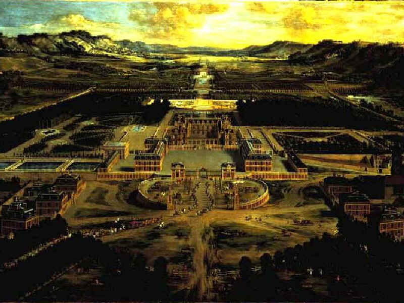
August 1973 Versailles
太陽王ルイ１４世が１７世紀に５０年の歳月と莫大な国家予算を費やし父の狩の館に７００余りの豪華な部屋と全長３ｋｍにおよぶ広大な西洋式庭園を有する西洋最大の宮殿を建てフランスの夢を描いた Gugong
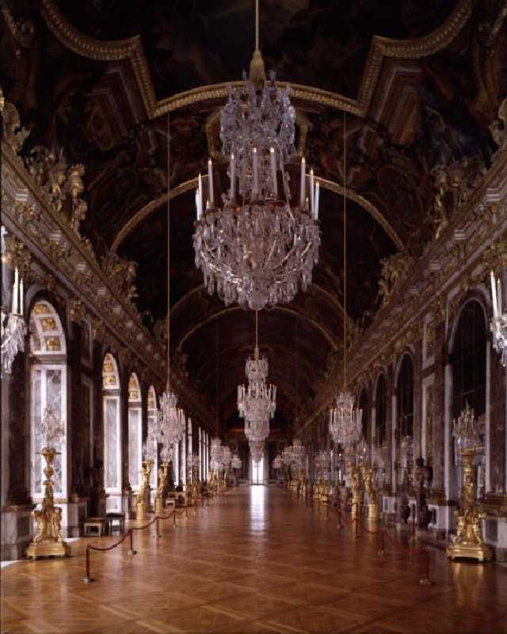
The Hall of Mirrors
７３ｍの鏡の間には１７枚の巨大な鏡を配し１４００余の噴水を有する庭園を映し出している
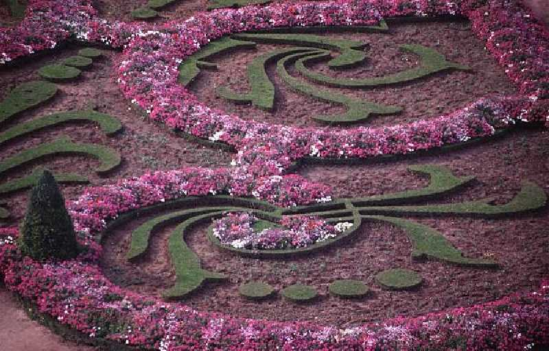
Rose garden
宮殿内の豪華さと噴水の多い広大な庭園には感激した
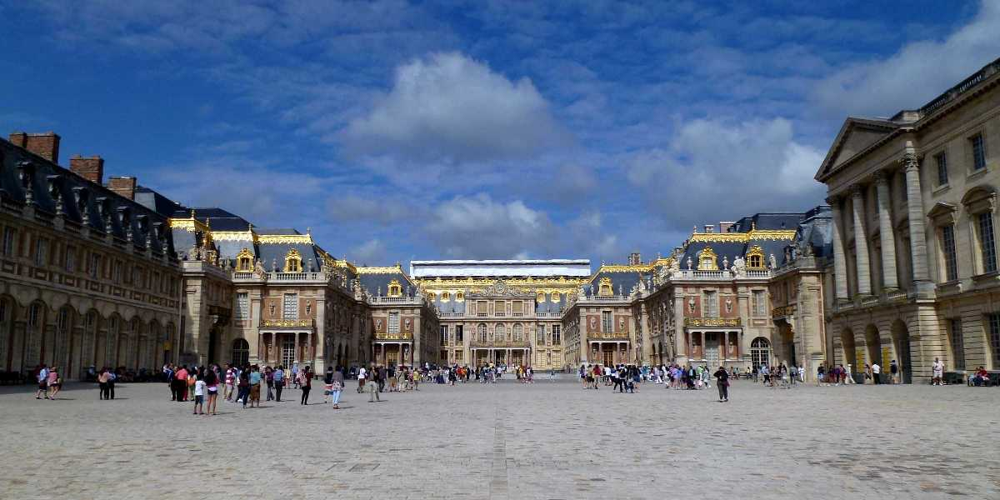
Palais de Versailles
８０日間世界一周鉄道の旅で４８日目 学生時代以来約４０年ぶりの再訪問
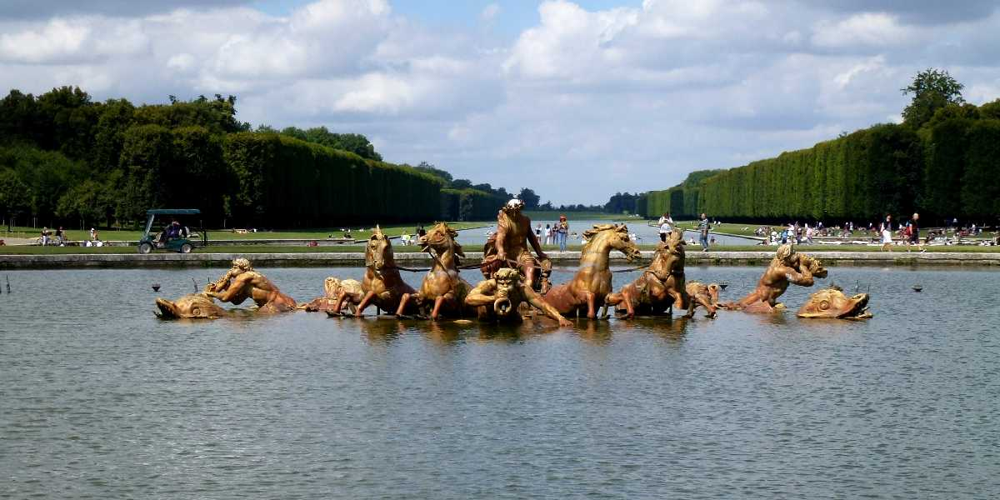
Bassin d'Apollon Versailles
ギリシア神話の神アポロンが海から４頭の馬が引く戦車にのって昇っていく様を描いたアポロンの噴水
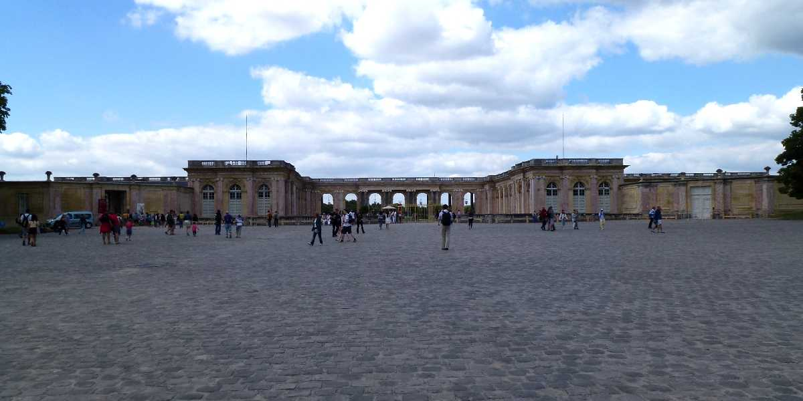
Le Grand Trianon Versailles
大トリアノン宮殿はルイ１４世により離宮として創られた
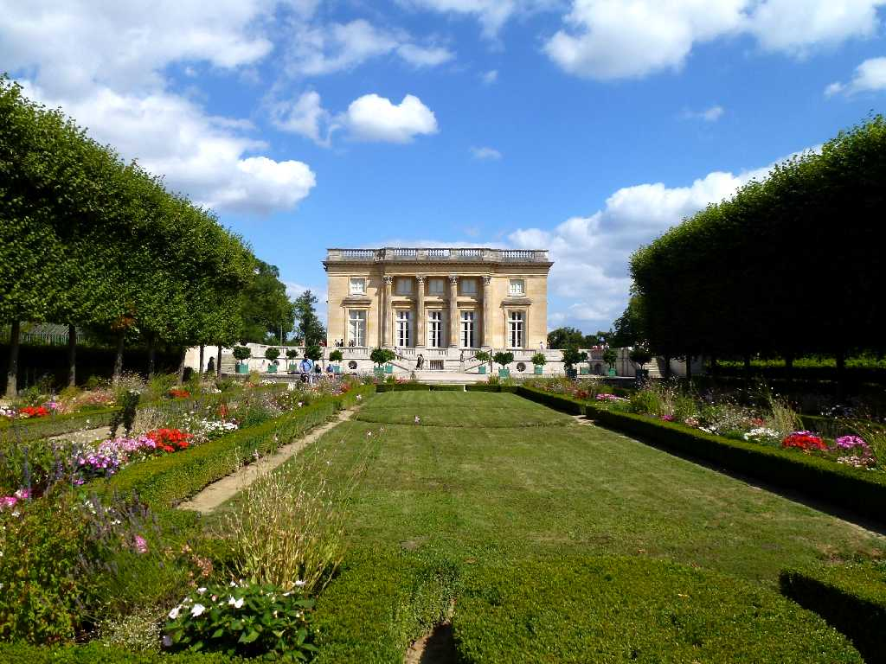
Le Petit Trianon Versailles
小トリアノン宮殿はルイ１６世の王妃マリーアントワネットの私的な宮殿で内装はロココ様式の最高峰と云われている
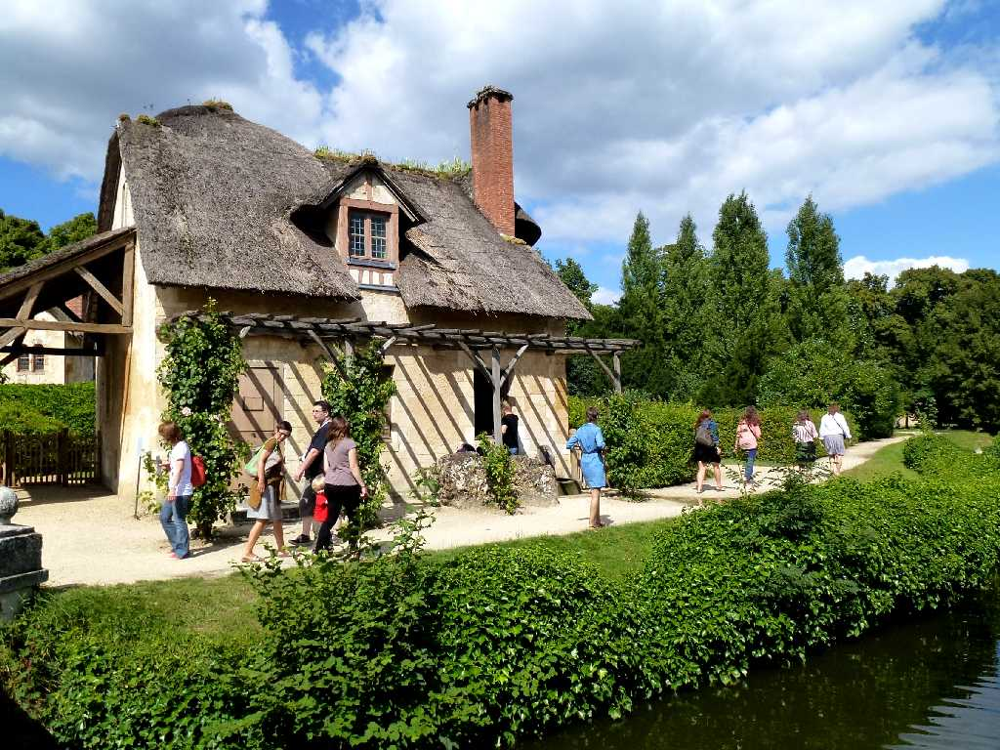
Hameau de la Reine Versailles
王妃の村里はルイ１６世の王妃マリーアントワネットのために村里を模して創られたイギリス式庭園
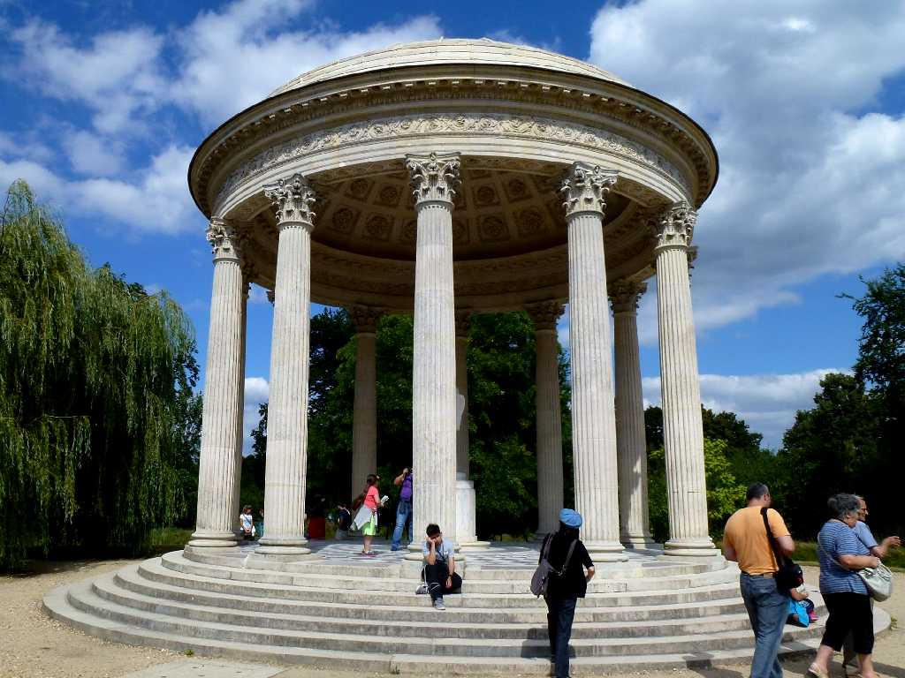
Temple de l'Amour
マリーアントワネットとスウェーデン貴族フェルゼンが密会していた愛の神殿
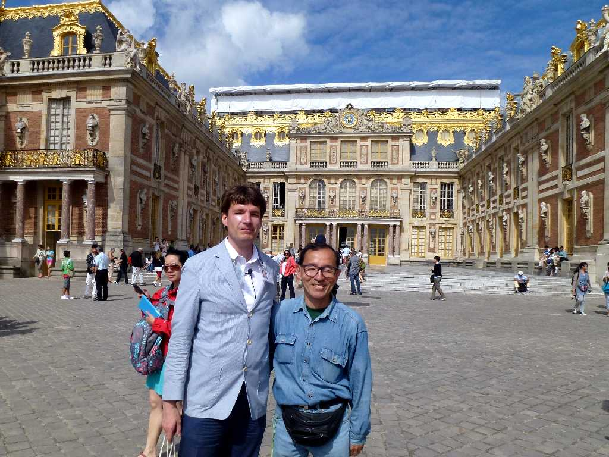
August 10 2013 Versailles
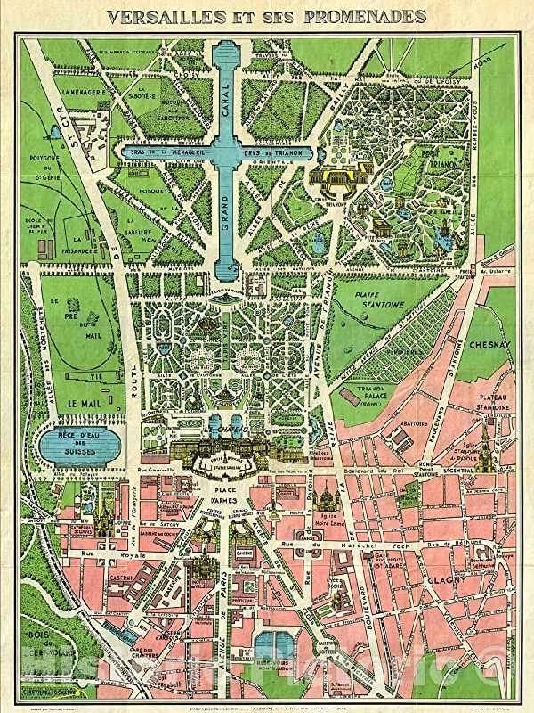